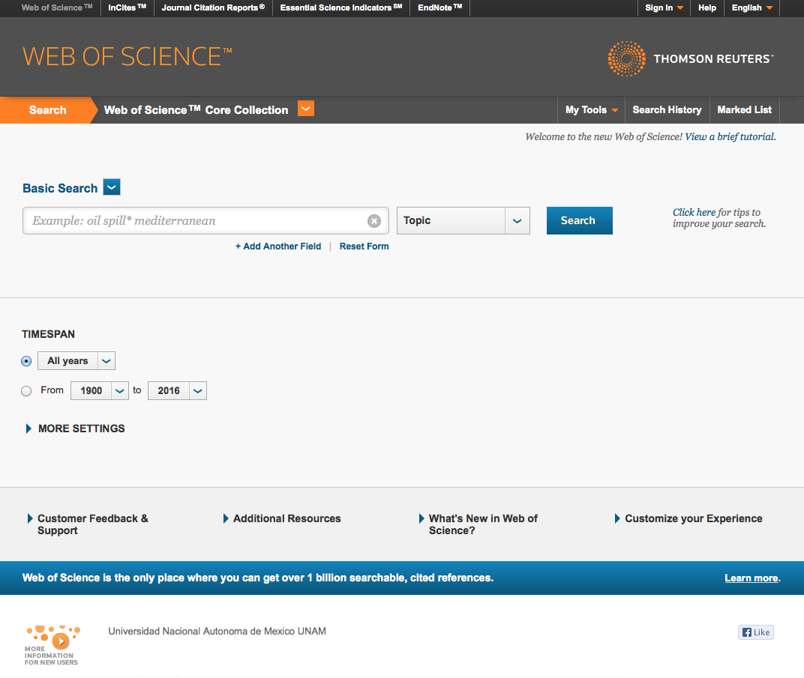
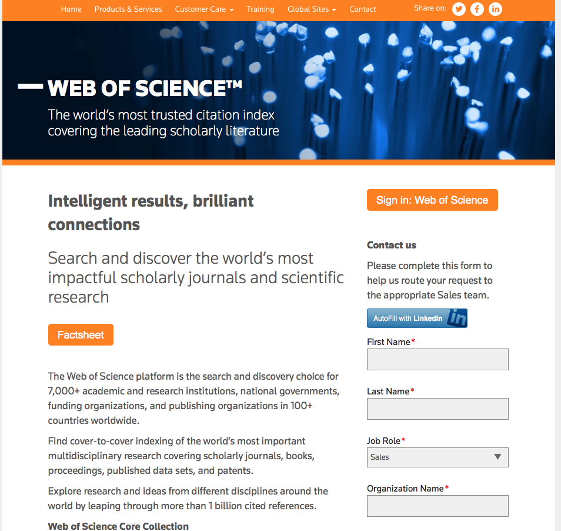
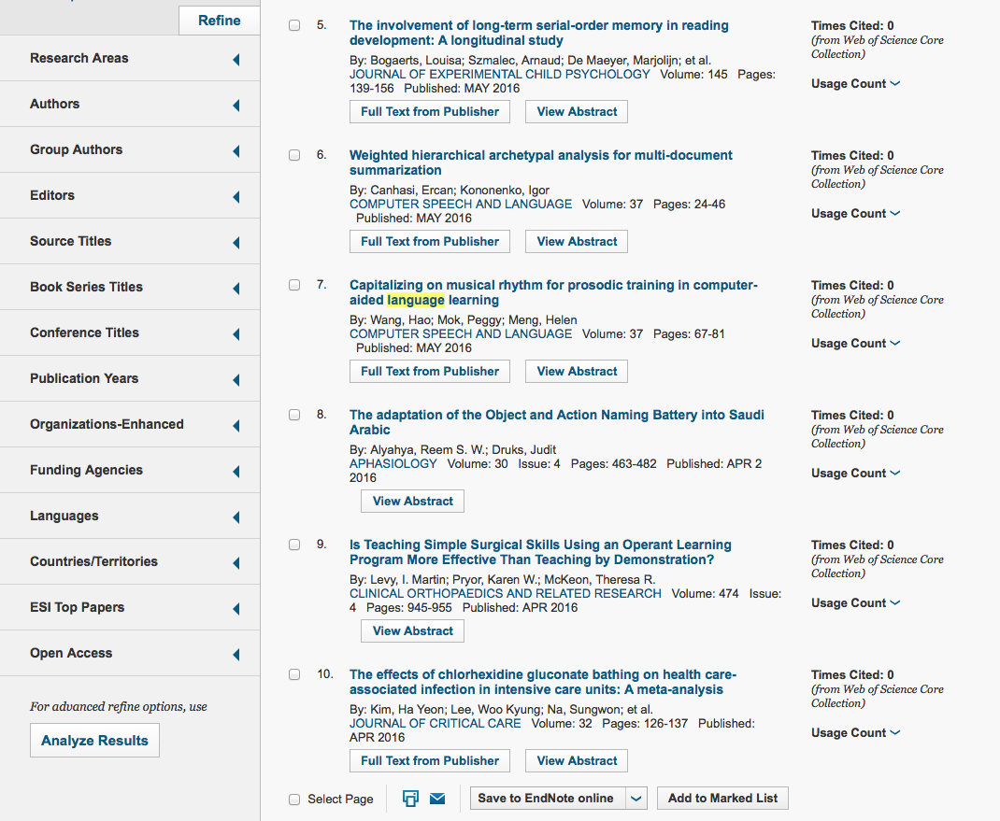
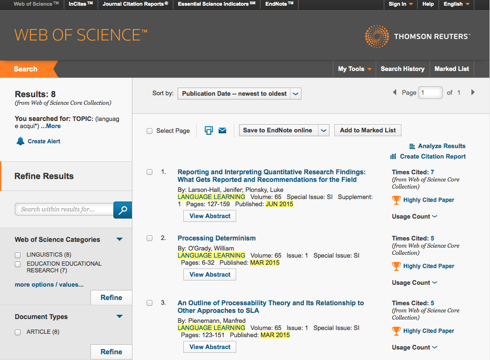
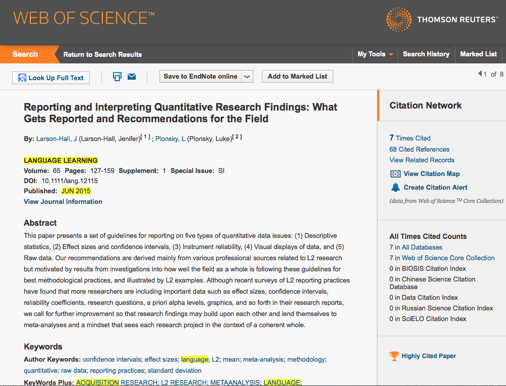
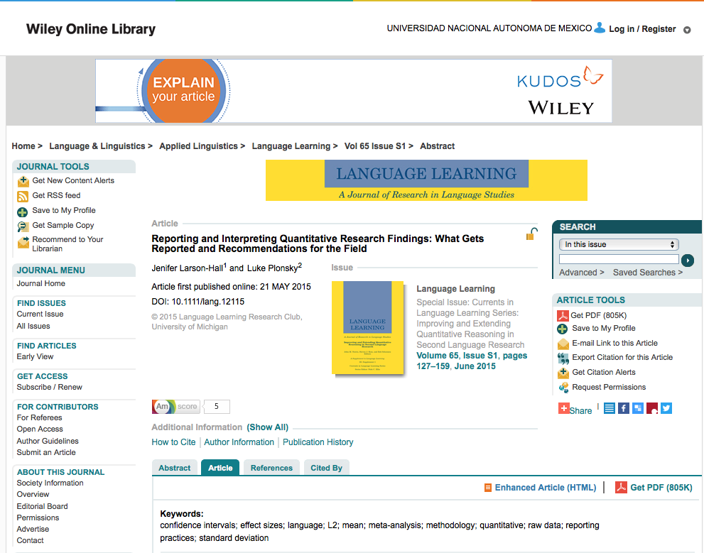
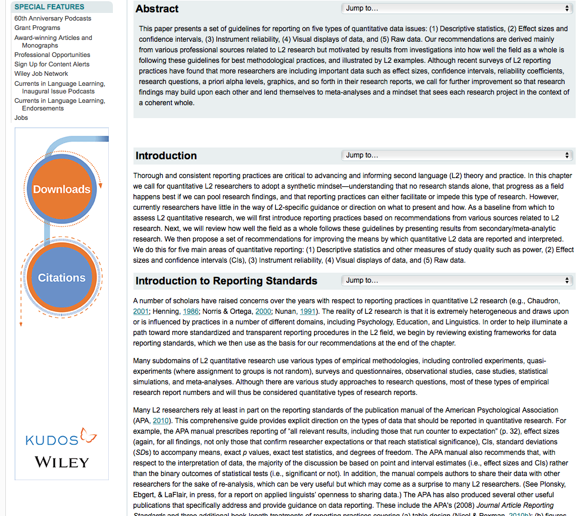
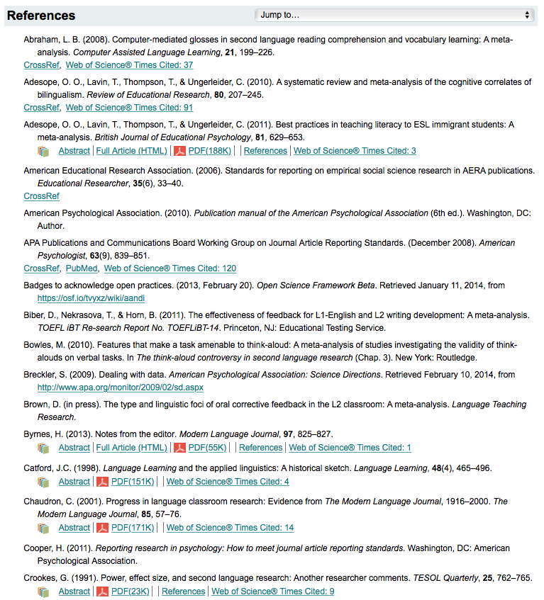

Actividades
- Conocer la base de datos WEB OF SCIENCE.
- A través de la DGB, UNAM.
- Directamente desde el navegador.
- Entra al sitio de la DGB, UNAM.
- Inicia sesión con tu nombre de usuario y contraseña.
- Ve a la sección de Catálogos y selecciona 'Bases de datos'.
- Una vez allí, teclea 'WEB OF SCIENCE' en la ventana y selecciona la opción 'nombre de la base'. Da click en el botón 'Buscar'.
- Se abrirá una ventana como la que sigue:
- La primera es el Índice de Referencias en publicaciones científicas.
- La segunda es el Índice de Referencias en publicaciones de Ciencias Sociales (incluye las Humanidades).
- La tercera es el almacén de todos los recursos de información con que cuenta esta base de datos.
- ¿Qué herramientas y signos de puntuación puedes usar para recuperar información en WEB OF SCIENCE? (Mira el ejemplo que te da el sitio.)
- ¿Cuáles son los criterios de búsqueda? (Abre el menú con la palabra 'Topic'.)
- ¿Qué otros campos puedes abrir para refinar tu búsqueda? (Abre justo abajo de la ventana con el ejemplo.)
- ¿Qué herramientas puedes usar desde la barra superior? (Despliega el menú que dice 'My tools'.)
- ¿Qué recursos adicionales te ofrece?
- Da click en 'Customize your Experience' (en la parte inferior de la pantalla) y realiza tus primeras pruebas, ¿qué te parece? Describe brevemente tu experiencia (2 a 5 líneas).
- Identificar sus componentes principales y el tipo de información que contiene.
- Identificar los métodos de búsqueda idóneos para este sitio.
- Realiza una búsqueda sobre tu tema de interés en WEB OF SCIENCE.
- Reporta tu experiencia en el mismo documento de la actividad anterior.
- Elaborar un mapa que describa a grandes rasgos esta base de datos.
- Elabora un mapa mental o un cuadro sinóptico en el que conserves los datos más importantes y útiles de WEB OF SCIENCE: vías de ingreso, organización, formas de búsqueda y refinación de la búsqueda, etc.
- Comparte tu documento en el foro y con las ponentes del Taller.
Al igual que SCOPUS, hay dos formas de entrar a Web of Science:
Nosotros optaremos por la primera.
Cada una de las ligas te dirige a una sección diferente de WEB OF SCIENCE:
Da click en la tercera liga 'Acceso por ISI (Cubre desde 1900). Se abrirá una ventana que dice 'Recurso externo' como la que sigue:
Notarás que en la parte inferior hay un letrero que dice 'Universidad Nacional Autónoma de México UNAM'. A la izquierda hay un logotipo anaranjado con una flecha, da click sobre él. Se abrirá una ventana como esta:
Aquí tienes la opción de registrarte como usuario. La ventaja es que recibirás alertas de nuevas adquisiciones en las áreas de mayor interés para ti. La desventaja es que habrá que pagar por los textos más recientes que sean de tu interés. Pero esa desventaja queda anulada cuando podemos ingresar como usuarios UNAM.
Al terminar tu registro, regresa a la página donde estaba el logotipo anaranjado junto al letrero de la UNAM. Esa es la página desde donde realizaremos todas las búsquedas.
Actividad 7.1
Desde tu Google drive, abre un documento y nómbralo APELLIDO.S7
Responde las siguientes preguntas:
Veamos juntos un ejemplo para descubrir otras ventajas que ofrece WEB OF SCIENCE.
Supongamos que nuestro tema de interés es la adquisición de una lengua extranjera. Tecleamos 'language acqui*' en la ventana de búsqueda y dejamos 'Topic' seleccionado en ese menú. La ventana que resulta es la que sigue:
Como puedes ver, hay 27,012 resultados y NO todos son útiles, así que refinaremos la búsqueda. Observa que del lado izquierdo aparecen las categorías en las que WEB OF SCIENCE ha organizado los documentos relacionados con la Lingüística y la Psicología del Desarrollo. Al elegir una de ellas podemos refinar la búsqueda.
Debajo se enlistan los tipos y la cantidad de documentos disponibles en estas categorías: hay 19,072 artículos, 1,475 reseñas, etc. Al seleccionar una de estas opciones, también refinamos la búsqueda.
Ahora veamos la mitad inferior de esta página:
En la pantalla de arriba, la columna de la izquierda da una serie de criterios más para refinar las búsquedas. WEB OF SCIENCE te permite 'personalizar' tus búsquedas cuando usas los mismos parámetros en varias ocasiones. Veamos qué sucede si seguimos adelante con nuestro ejemplo. A continuación te mostramos capturas de pantalla de los criterios elegidos para refinar nuestra búsqueda. (Todas aparecen en la columna izquierda de la pantalla, pero las mostramos paralelas para facilitar la visualización.)
En nuestro ejemplo, después de refinar la búsqueda con los parámetros que se muestran arriba, WEB OF SCIENCE arroja los siguientes resultados.
De los 27,012 resultados arrojados en la primera búsqueda escribiendo solo el tema (topic), ahora obtenemos solamente ocho (la imagen muestra los primeros 3), todos directamente relacionados con el interés de búsqueda.
Ahora podemos revisar los abstracts de cada artículo al dar click en el botón 'View Abstract'. De esta forma estamos en condiciones de seleccionar los mejores resultados.
Supongamos que elegimos el primer resultado, damos click sobre el título y obtenemos la siguiente pantalla:
Aquí se provee toda la información que permite 'evaluar a priori' la calidad del texto recuperado: palabras clave (¿coinciden con nuestra búsqueda?), datos del autor, de la publicación, número de veces que se ha hecho referencia a este artículo en otras publicaciones y, en este caso, el texto ha sido reconocido como Highly Cited Paper ('Texto muy citado').
En caso de considerar que este documento puede sernos de utilidad, podemos leer la versión completa al dar click en el botón 'Look Up Full Text' que aparece en la esquina superior izquierda.Se abre una ventana de Google Scholar donde lo único que aparece es el título del texto que deseamos ver. Damos click sobre el título y entramos a una ventana como la que sigue:
En la esquina superior derecha se muestra que este texto se abre como parte del convenio de la UNAM con WEB OF SCIENCE. Los logotipos y título de la página muestran que estamos ahora en la Biblioteca Wiley Online. En seguida se muestra una imagen de la publicación completa con sus datos, en la columna de la derecha, una serie de herramientas que podemos usar con relación a este texto. En la parte de abajo de la pantalla de arriba vemos cuatro pestañas que dan información adicional sobre el documento y su difusión entre pares.
Ahora analicemos la parte media de la pantalla donde podemos leer el artículo completo.
Como verás, cada sección brinda la opción de 'saltar' hasta un vínculo interno del documento para agilizar la lectura y para revisar datos. Dentro del texto, hay vínculos activos que permiten revisar las publicaciones citadas, autores y algunos términos.
En la parte inferior de la pantalla, encontramos las referencias o bibliografía del artículo. Esta sección resulta muy útil porque da las ligas hacia otros documentos sobre el tema y que pueden consultarse y/o descargarse en formato PDF.
En la sección de Referencias , también es posible visitar sitios relacionados con el tema, leer los abstracta de publicaciones citadas en este artículo y revisar referencias cruzadas.
Para descargar el artículo completo en PDF, debes ir al final de la página y dar click en la liga 'Get PDF (805K)'
Actividad 7.2
Actividad 7.3